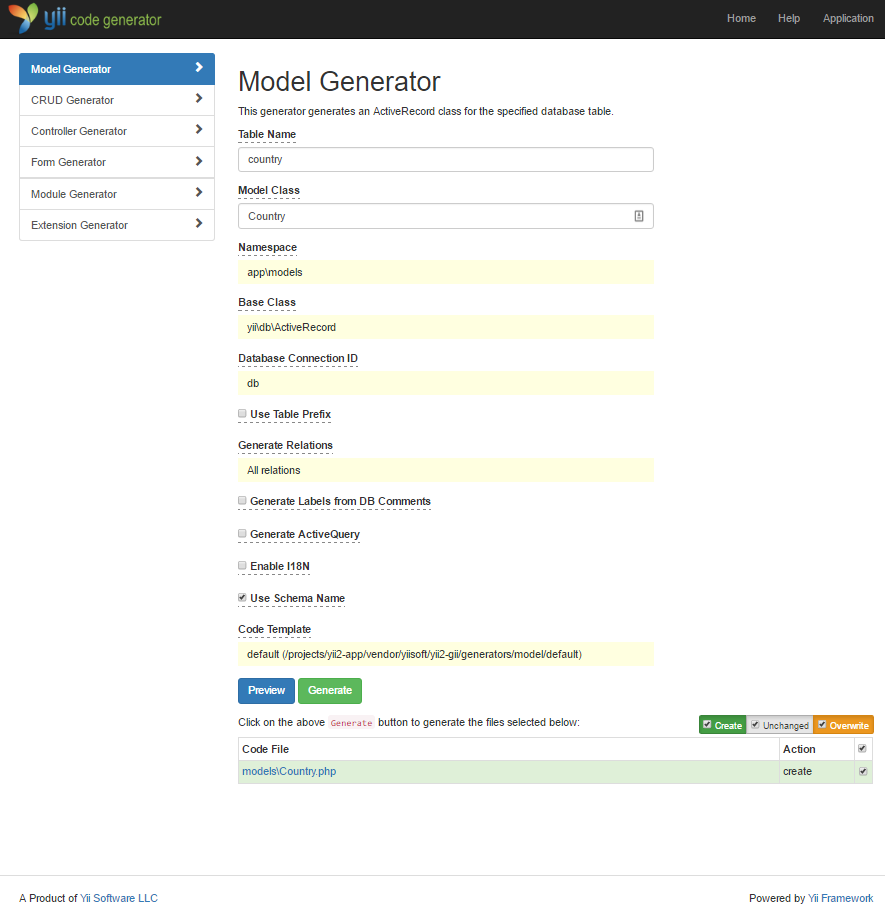
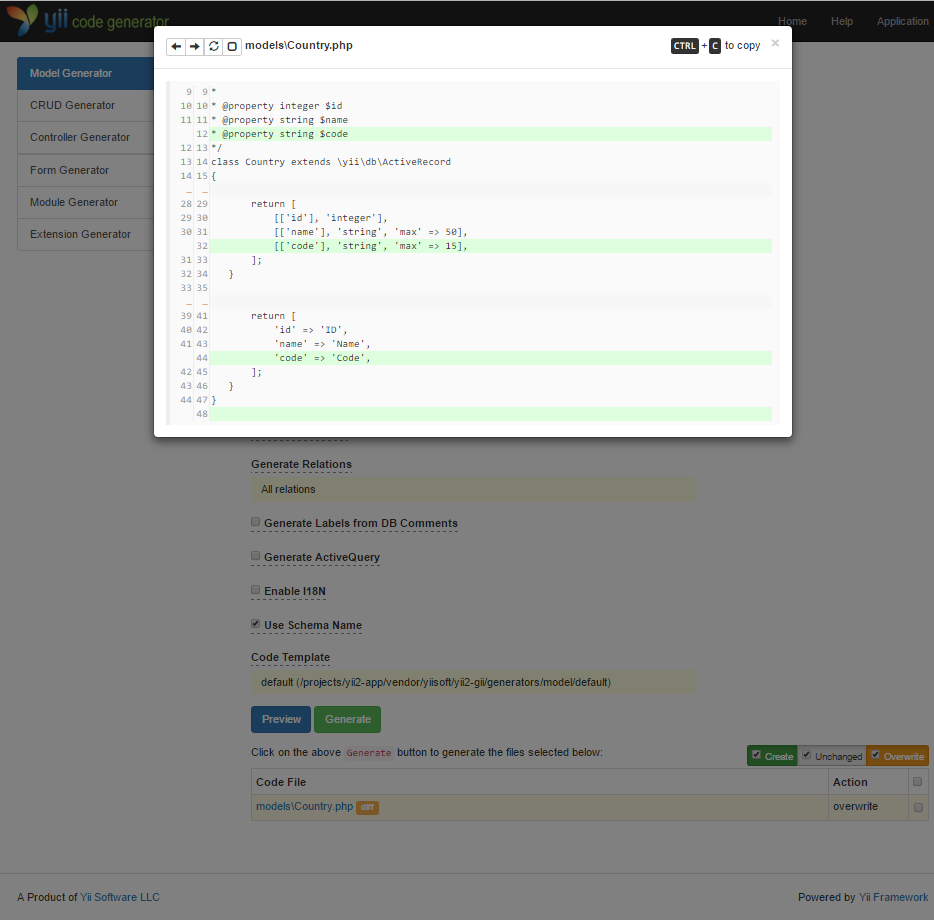
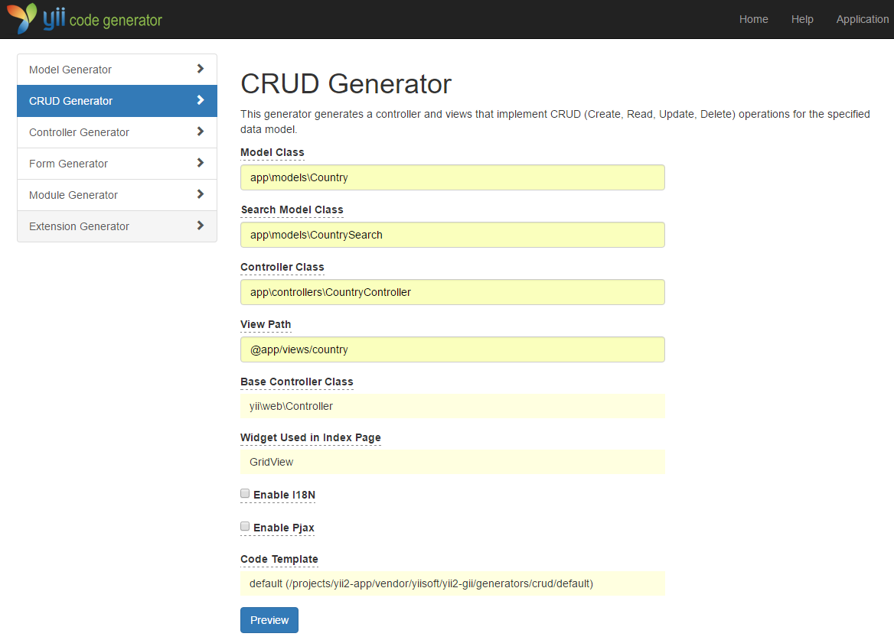

Generando Código con Gii ¶
En esta sección, explicaremos cómo utilizar Gii para generar código que automáticamente implementa algunas de las características más comunes de una aplicación. Para lograrlo, todo lo que tienes que hacer es ingresar la información de acuerdo a las instrucciones mostradas en la páginas web de Gii.
A lo largo de este tutorial, aprenderás
- Cómo activar Gii en tu aplicación;
- Cómo utilizar Gii para generar una clase Active Record;
- Cómo utilizar Gii para generar el código que implementa las operaciones ABM de una tabla de la base de datos.
- Cómo personalizar el código generado por Gii.
Comenzando con Gii ¶
Gii está provisto por Yii en forma de módulo. Puedes habilitar Gii
configurándolo en la propiedad yii\base\Application::modules de la aplicación. Dependiendo de cómo hayas creado tu aplicación, podrás encontrar que el siguiente código ha sido ya incluido en el archivo de configuración config/web.php:
$config = [ ... ];
if (YII_ENV_DEV) {
$config['bootstrap'][] = 'gii';
$config['modules']['gii'] = [
'class' => 'yii\gii\Module',
];
}
La configuración dice que al estar en el entorno de desarrollo,
la aplicación debe incluir el módulo llamado gii, cuya clase es yii\gii\Module.
Si chequeas el script de entrada web/index.php de tu aplicación, encontrarás la línea
que esencialmente define la constante YII_ENV_DEV como verdadera -true.
defined('YII_ENV') or define('YII_ENV', 'dev');
De esta manera, tu aplicación habrá habilitado Gii, y puedes acceder al módulo a través de la siguiente URL:
http://hostname/index.php?r=gii

Generando una Clase Active Record ¶
Para poder generar una clase Active Record con Gii, selecciona "Model Generator" (haciendo click en el vínculo que existe en la página inicial del modulo Gii). Después, completa el formulario de la siguiente manera,
- Table Name:
country - Model Class:
Country

Haz click el el botón "Preview". Verás que models/Country.php está mostrado listado como la clase resultante que ha de ser creada. Puedes hacer click en el nombre de la clase para previsualizar su contenido.
Al utilizar Gii, si habías creado previamente el mismo archivo y puede ser sobrescrito, si haces click
en el botón diff cercano al nombre del archivo, verás las diferencias entre el código a ser generado
y la versión existente del mismo.

Para sobrescribir un archivo existente, marca el checkbox que se encuentra al lado de "overwrite" y posteriormente haz click en el botón "Generate".
Después, verás una página de confirmación indicando que el código ha sido generado correctamente y tu archivo models/Country.php
ha sido sobrescrito con el nuevo código generado.
Generando código de ABM (CRUD en inglés) ¶
En computación, CRUD es el acrónimo de Crear, Obtener, Actualizar y Borrar (del inglés: Create, Read, Update y Delete) representando la cuatro funciones con datos más comunes en la mayoría de sitios Web. El acrónimo ABM es Altas, Bajas y Modificaciones. Para generar un ABM, selecciona "CRUD Generator" y completa el formulario de esta manera:
- Model Class:
app\models\Country - Search Model Class:
app\models\CountrySearch - Controller Class:
app\controllers\CountryController

Al hacer click en el botón "Preview" verás la lista de archivos a ser generados.
Si has creado previamente los archivos controllers/CountryController.php y
views/country/index.php (en la sección sobre bases de datos de esta guía), asegúrate de seleccionar el checkbox "overwrite" para reemplazarlos. (Las versiones anteriores no disponían de un soporte ABM (CRUD) completo.)
Probándolo ¶
Para ver cómo funciona, accede desde tu navegador a la siguiente URL:
http://hostname/index.php?r=country/index
Verás una grilla de datos mostrando los países de la base de datos. Puedes ordenar la grilla o filtrar los resultados escribiendo alguna condición en los encabezados de las columnas.
Por cada país mostrado en la grilla, puedes elegir entre visualizar el registro, actualizarlo o eliminarlo. Puedes incluso hacer click en el botón "Create Country" que se encuentra sobre la grilla y así cargar un nuevo país en la base de datos.


La siguiente es la lista de archivos generados por Gii, en el caso de que quieras inspeccionar cómo el ABM ha sido generado, o por si desearas personalizarlos:
- Controlador:
controllers/CountryController.php - Modelos:
models/Country.phpymodels/CountrySearch.php - Vistas:
views/country/*.php
Info: Gii está diseñado para ser una herramienta altamente configurable. Utilizándola con sabiduría puede acelerar enormemente la velocidad de desarrollo de tu aplicación. Para más detalles, consulta la sección Gii.
Resumen ¶
En esta sección, has aprendido a utilizar Gii para generar el código que implementa completamente las características de un ABM de acuerdo a una determinada tabla de la base de datos.